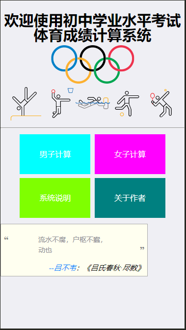
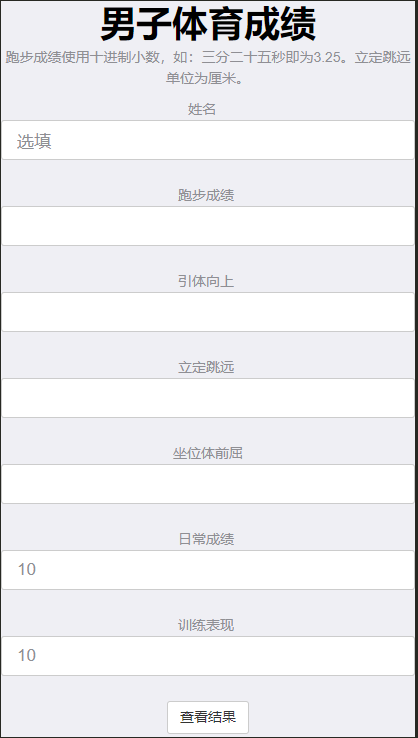

首先，对你使用本程序表示感谢。
本程序用于计算潍坊市初中学业水平考试体育学科的分数的计算。长期以来，复杂晦涩的体育成绩计算是了广大学生和老师们的苦恼，本程序正是由此应运而生。旨在帮助广大考生方便简洁的计算考试成绩，并进行简单的分析以提供参考。
由于程序开发者的水平限制，本程序的问题与漏洞一定不少，欢迎广大师生批评指正。

这是本程序的主页也就是开始界面。在这个界面中有四个选项以供选择，如果是想进行体育成绩的计算，可以直接根据性别选择进入计算，在这里不多赘述。
下面一行的“系统说明”以及“关于作者”是帮助广大使用者了解这个程序的更多信息而设置的，如需做更多了解，可点击进入查看。

这是本程序的计算页面，在页面中姓名、日常成绩、训练表现都已经给出填上，如需更改则进行修改。一般情况不需更改的则不需理会。
使用时，依次填入自己的成绩，这里特别注意的是，填写跑步成绩时使用十进制小数制而不使用六十进制，如：三分二十五秒就是3.25。跳远的成绩单位时厘米，以米为单位。坐位体前屈的单位也是厘米。
填写完成后，点击查看结果。这时页面会刷新，回到页面的最顶部，需要重新滑倒最下部查看结果。
如需反馈问题，可发送邮件至2328546844@qq.com